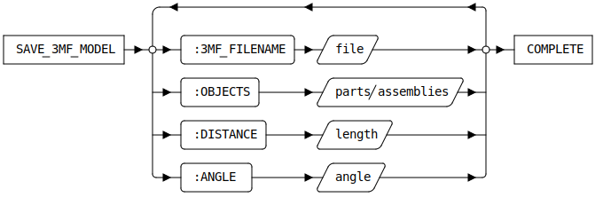

SAVE_3MF_MODEL [Public Dialog]
Package: 3d-printing.data-exchange (Nick name(s): :3dp.x)
Save a selection of parts and assemblies as 3mf data file.
|
|
|

Syntax

Options
:3MF_FILENAME- Relative or absolute path to the 3mf file .:OBJECTS- Selection of parts and assemblies to export in 3mf format.:DISTANCE- Linear precision . Maximum allowed distance of the mesh to the 3d model geometry.:ANGLE- Angular precision . Maximum allowed deviation of facet normals with the model geometry normals.